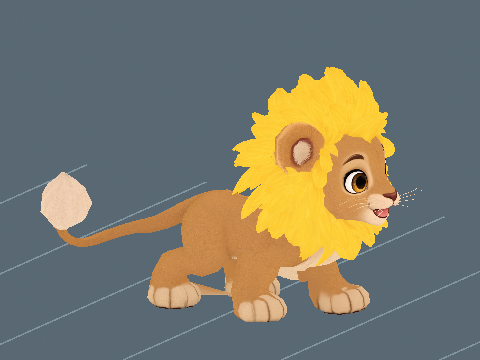

Audio and animation previews, videos and model downloads are retained locally and are not hosted on this website. Text, assessments and still images remain available.
Jungle Wilds / Creature profile
Dandylion
Vulnerable
Perspective modelling reference · Open image for full size
About Dandylion
A golden wanderer with soft padded paws and a bright mane of yellow petals. Dandylion's warm coat ends in one fluffy white seed head at the tip of its tail, which bobs gently with every step.
One active creature total: following or mounted. Choosing another replaces the current creature.
Hatch bonuses
First hatch: +10,000 Strength XP and $100,000 Cash. Later hatches: +1,000 Strength XP (10%), with no further discovery Cash.
One first-hatch award per player and species, shared across qualities and sizes. The certificate shows both credited amounts with the skill icon. Fixed amounts are independent of XP boosts. All hatch bonuses
Assigned game stats. The current creature model is installed alongside its existing egg and named wild spawning. Gameplay acceptance and developer review remain separate.
The current 5.5-stud model has 2,115 triangles, a matte 1K colour map and a pale dandelion seed head. The replacement retains the existing Idle, Walk, Run and Chase. Its Jungle egg and earnings are retained. The new model awaits developer review. Installed Blink needs work at 7.3/10. Both pupils are covered and the crease reads clearly. The rounded caps protrude from the faceted cheeks in close-up. The separately shown source-rendered Blink scored 7.8/10. Live movement and device performance remain unverified.
Parent reference masses: Lion (157.50 kg) and Dandelion (20.00 g). Parent reference sizes: Lion: 2.05 m (head-body length); Dandelion: 0.275 m (flowering plant height). For each parent, use the larger recorded height or length. Natural standard size blends 75% of the heavier parent dimension and 25% of the other parent dimension. Compress that natural size to its standard baseline, then apply the saved quality roll directly to dimensions and mass. Model proportions stay fixed. Creature kg uses the heavier parent mass and the actual dominant-dimension ratio. Egg kg is about 10.0892% of actual creature kg. Raw egg height scales with the same roll, followed by a 1.5-stud minimum that does not change kg. One stud is 0.28 metres. Some parent measurements remain body-length, shoulder-height or diameter proxies, and explicit game estimates remain labelled. See the current worked calculation and scale tables below.
A Standard pet at internal scale 1 hatches at 4.84955 studs (1.35788 m) and 123.41 kg. The base statistics describe catalogue dimensions at scale 1.
The egg and creature share one internal scale. Egg kg is the base creature kg times scale. All base egg dimensions multiply directly by scale, and quality chooses the scale band.
Earlier installed Roblox image
Retained Studio Edit image at the earlier display scale. Captured before the 8 November 2026 parent-size blend. Use the updated height, length and weight above; this image does not establish the revised scale or ground contact.
The current 5.5-stud model has 2,115 triangles, a matte 1K colour map and a pale dandelion seed head. The replacement retains the existing Idle, Walk, Run and Chase. Its Jungle egg and earnings are retained. The new model awaits developer review. Installed Blink needs work at 7.3/10. Both pupils are covered and the crease reads clearly. The rounded caps protrude from the faceted cheeks in close-up. The separately shown source-rendered Blink scored 7.8/10.
Motion previews and downloads are retained locally. Playback starts on request so the rest of the page stays still.
These are local model renders. They do not establish live gameplay acceptance.
2 November 2026. Patrol: 4.5 studs/s (1.26 metres/s) at 10.78 studs (3.02 metres) tall. The shown cycle repeats 1.04 times per second.
A calm four-beat walk keeps the mane and upper body steady without turning an ordinary patrol into a run.
The existing body-animation scores remain separate. This review assesses patrol speed and cadence; it does not award a replacement animation score.

|
These are offline source-skin previews at the installed guardian scale. Route turns, obstacles, water transitions and multiplayer still need in-game review. Chase and egg-return tuning are unchanged. Existing developer decisions are preserved.
The current 5.5-stud model has 2,115 triangles, a matte 1K colour map and a pale dandelion seed head. The replacement retains the existing Idle, Walk, Run and Chase. Its Jungle egg and earnings are retained. The new model awaits developer review. Installed Blink needs work at 7.3/10. Both pupils are covered and the crease reads clearly. The rounded caps protrude from the faceted cheeks in close-up. The separately shown source-rendered Blink scored 7.8/10.
Download every action
Action downloads
Dandylion action files
Action
GIF
MP4
Idle
Walk
Run
Chase
Blink
Recorded parent height and weight
These are the exact reference inputs used for this creature. Some are range midpoints or explicit estimates, rather than measured population averages. Height and body length are labelled separately.
Scroll the table sideways on a narrow screen.
Parent inputs and their arithmetic averages. Select a linked value to open its recorded source.
Equal-sex mass mean of male 189 and female 126 kg; midpoint total length 2.85 m minus midpoint tail 0.8 m.
Kew reports 5 to 50 cm flowering plant height; midpoint is 27.5 cm.
(Parent 1 size + Parent 2 size) / 2
How the weight was recorded
Equal-sex mass mean of male 189 and female 126 kg; midpoint total length 2.85 m minus midpoint tail 0.8 m.
Kew reports 5 to 50 cm flowering plant height; midpoint is 27.5 cm.
(Parent 1 kg + Parent 2 kg) / 2
Current parent-size blend
Lion is the heavier parent. Natural target length = 0.75 x 2.05 + 0.25 x 0.275 = 1.60625 m, or 5.736607142857 studs.
Models longer than they are tall match forward length; the others match height. All dimensions scale together, preserving proportions. The natural standard dominant dimension is compressed to the 3 to 14 stud baseline range before the saved quality roll is applied. Individual quality scales can exceed that baseline range. Long bodies can be less than 3 studs tall. The parent measurement types above remain explicitly labelled.
Check the calculation at scale 1
Heavier parent
Lion
Parent reference
2.05 m and 157.5 kg
Creature dominant dimension
5.736607142857 studs x 0.28 = 1.60625 m
Direct dominant-dimension weight ratio
157.5 x 1.60625 / 2.05 = 123.407012195122 kg
Catalogue creature weight
123.407012195122 kg
Egg weight, median bird ratio
12.45079938311 kg
Base egg height, 50/50 blend
1.8 x sqrt((4.849554596313 / 4) x (123.407012195122 / 4)^(1/3)) = 3.50999698702 studs
Matches the parent reference and catalogue weight.
Heavier parent kg times max(current creature height,length) in metres divided by max(recorded parent height,length). No squared mass or length correction.
The current 75/25 blend uses the larger recorded dimension of each parent independently. Compress the natural standard size first, then apply the saved quality roll directly to dimensions and mass, preserving body proportions. Weight uses the heavier parent and actual dominant dimension. Egg kg uses the median bird fraction. Historical means and earlier balance multipliers are retained for provenance and do not control current mass.
Scale, egg weight and carrying impact
These ranges use the actual quality bands and shared creature scale. Most rolls are near the midpoint.
Computed ranges at each quality. Carry speed is a percentage of normal movement before other modifiers.
Base rates are per second for a creature placed at Home. Eggs still incubating and creatures in inventory do not earn. Currency starts at $0. Hatched pets placed in your Home garden pay into your wallet every second while you are online. The currency is Cash. Normal income scales with saved size and quality: Standard 1x, Fine 2x, Superior 4x, Epic 8x and Legendary 16x. Followers do not earn garden income; active petting temporarily gives the petted creature 3x. See Game mechanicsXP and skill levels for the full rules. Grim Peeper pets earn $10 per second.
Reviewed
Reviewed means Daniel has reviewed the in-game model and animations and is happy with them.
Daniel tells Codex when he approves how a model looks and works. Codex records Daniel's approval and updates this shared site. Reviewed shows a tick when Daniel is happy with the in-game model and animations.
✗ Not reviewed
Daniel: ✗ Pending
Real model and animations, species egg, four shiny finishes and icons are installed. Assigned-biome wild eggs are enabled. Daniel model/animation approval and live gameplay acceptance remain pending.
Pet icon
The face icon used in the game. Labraduck also represents the Pets menu.
Collection artwork
Full-body artwork and its matching silhouette, prepared at 256 by 256 pixels for the Pets collection.